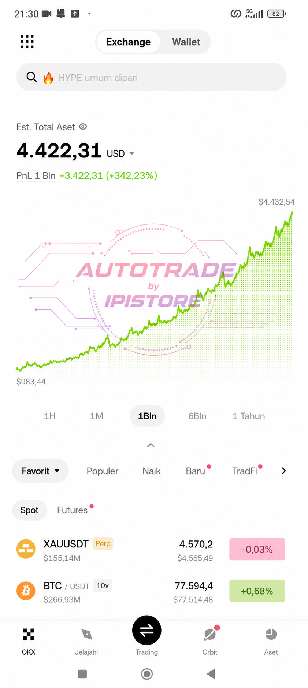
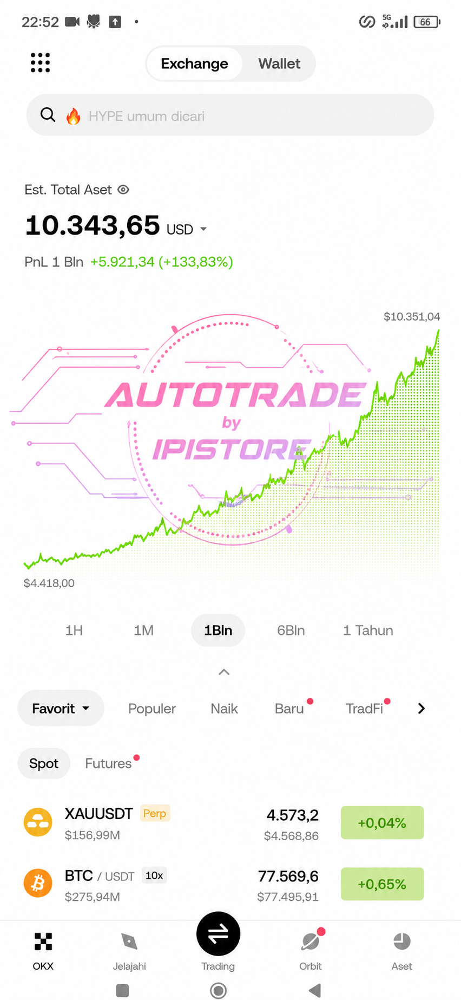

Dua screenshot di bawah ini menunjukkan simulasi dan hasil pendekatan trading disiplin menggunakan sistem yang dijelaskan di ebook ini. Bukan profit satu malam. Bukan leverage gila. Tetapi konsistensi, kontrol resiko, dan pengulangan setup EV+.

Fokus utama: - disiplin entry - RR konsisten - mengurangi overtrade - menjaga equity curve tetap stabil

Equity curve mulai membentuk kenaikan lebih stabil. Fokus bukan mencari jackpot, tetapi menjaga probabilitas tetap sehat dalam jangka panjang.
Mengubah $1.000 menjadi $10.000 masih realistis dalam dunia trading crypto jika dilakukan dengan sistem, disiplin, dan pengelolaan resiko yang benar.
Tetapi mengubah $1.000 menjadi $1.000.000 biasanya membutuhkan leverage ekstrem, overtrade, atau perjudian tersembunyi yang pada akhirnya menghancurkan akun trader retail.
Trader pemula sering terjebak pada mimpi profit besar dalam waktu singkat. Mereka melihat screenshot profit besar di internet, tetapi tidak melihat ribuan akun yang hancur di belakang layar.
Panduan ini dibuat dengan pendekatan realistis, sederhana, dan langsung bisa dipakai. Bukan teori rumit yang hanya terlihat pintar di media sosial.
Market crypto sering melakukan penyapuan liquidity sebelum bergerak ke arah sebenarnya. Mayoritas trader retail biasanya masuk terlalu cepat. Market maker mengetahui area stoploss mereka. Karena itu sering terjadi sweep sebelum harga bergerak.
Karena market sering mengambil liquidity di bawah low sebelumnya untuk menjebak seller dan memancing panic selling. Setelah liquidity tersapu, market justru bergerak naik.
Setup ini sederhana tetapi memiliki EV+ jika dipakai konsisten pada market yang sedang trend.
Kebalikannya. Candle hijau diikuti candle merah yang wick atasnya menyapu high candle sebelumnya. Setelah itu entry sell.
Mayoritas trader retail menyukai breakout. Masalahnya, market crypto sangat sering memberikan fake breakout. Justru di situlah peluang muncul.
Karena trader retail biasanya panik saat melihat candle turun tiba-tiba. Padahal sering kali itu hanyalah proses pengambilan liquidity sebelum market melanjutkan trend.
Trader pemula sering menganggap RSI overbought berarti harus sell. Padahal dalam market trend kuat, RSI bisa tetap tinggi sangat lama.
Karena market trend biasanya bergerak dalam gelombang. RSI pullback di trend kuat sering menjadi area continuation yang lebih aman dibanding mengejar candle hijau panjang.
Market crypto memiliki momen tertentu ketika volume meningkat drastis. Biasanya saat sesi London atau New York mulai aktif.
Karena liquidity session sering menjadi target market maker. Setelah liquidity diambil, market sering bergerak cukup agresif.
Volume adalah bahan bakar market. Ketika volume besar muncul setelah market tenang, biasanya ada potensi pergerakan signifikan.
Karena market sering melakukan compression sebelum expansion. Inside candle setelah volume spike sering menjadi tanda market sedang bersiap bergerak.
Fokus pada coin dengan volume jelas dan pergerakan bersih. Terlalu banyak pair justru membuat fokus rusak.
Tidak ada setup juga bagian dari trading. Profesional tidak dibayar karena sering entry. Profesional dibayar karena memilih peluang terbaik.
Leverage tinggi membuat trader kehilangan kemampuan berpikir objektif. Market crypto sudah cukup volatile bahkan tanpa leverage ekstrem.
Trader yang bisa menghasilkan 2%–5% stabil per minggu jauh lebih berbahaya dibanding trader yang sesekali profit besar tetapi tidak konsisten.
Jika mengikuti gaya trading penulis, lebih baik melakukan 1.000 trade dengan aturan yang konsisten dibanding menunggu 1 peluang emas.
Banyak trader retail terjebak mencari “perfect setup”. Mereka menunggu satu peluang yang dianggap pasti berhasil. Masalahnya, ketika peluang itu gagal, mental mereka ikut runtuh.
Trader profesional memahami bahwa market adalah permainan probabilitas. Tidak ada setup yang menang terus. Yang membuat trader bertahan bukan satu trade besar, tetapi kemampuan menjalankan sistem yang sama secara disiplin dalam jangka panjang.
Konsistensi kecil yang dilakukan ribuan kali jauh lebih kuat dibanding satu keputusan emosional berisiko besar.